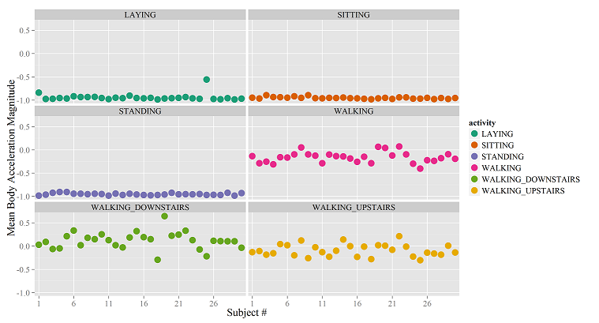

R Data Visualization & Data Products
mspcvsp
11/13/2014
Introduction
- Johns Hopkins University Data Science Cousera Specialization
- R language graphics libraries
- R language data products
Johns Hopkins University Data Science Cousera Specialization
R Language Base Graphics Library

Bache, K. & Lichman, M. (2013). UCI Machine Learning Repository Irvine, CA: University of California, School of Information and Computer Science.
R Language Lattice Graphics Library
- Scatter plot matrix reference:
- Air quality dataset
ggplot2

Bache, K. & Lichman, M. (2013).
UCI Machine Learning Repository
Irvine, CA: University of California, School of Information and Computer Science.
ggplot2

GGally

R Markdown Language
Slidify
Shiny Web Application

Conclusion
- R language graphics libraries
- Line graphs
- Scatter plot matrix
- Facets
- Geographic data visualization
- R language data products
- R Markdown language
- R Markdown HTML document
- R Markdown presentations
- Slidify
- Shiny web application